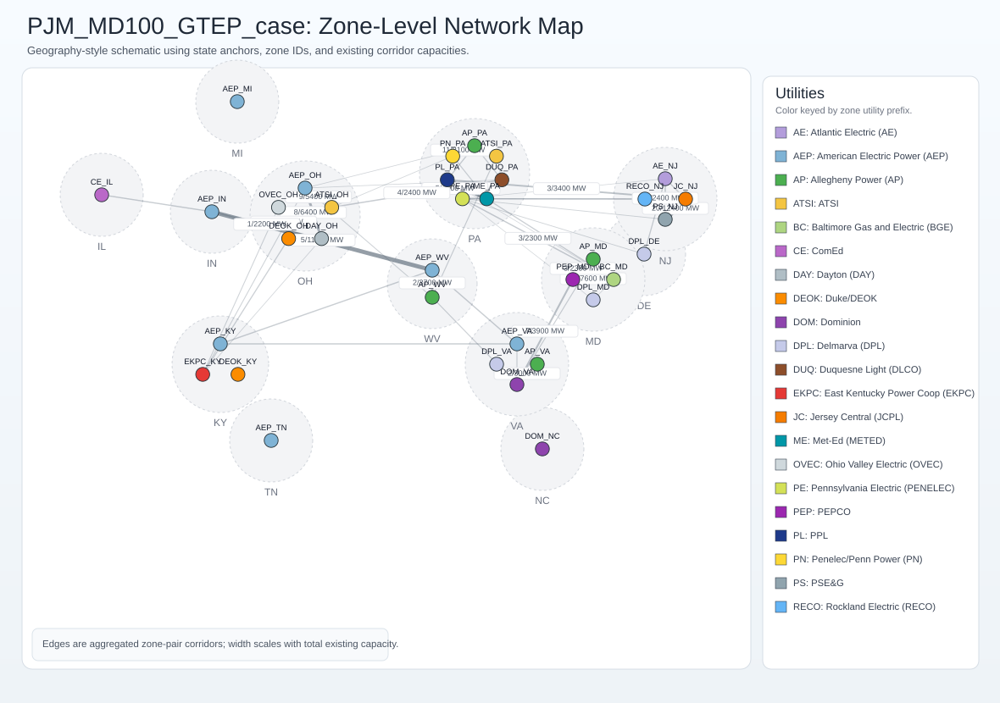

PJM_MD100_GTEP_case
Case path: ModelCases/PJM_MD100_GTEP_case Data path: ModelCases/PJM_MD100_GTEP_case/Data_PJM_GTEP_subzones
Dashboard
A live demo is hosted on Hugging Face Spaces:
The demo runs the PJM MD100 GTEP case with bundled output data — no installation required.
To run locally from the repo root:
python tools/hope_dashboard/gtep_app.pyThen open http://127.0.0.1:8051/ in your browser.
Model Setup Snapshot
| Setting | Value |
|---|---|
model_mode | GTEP |
resource_aggregation | 1 |
endogenous_rep_day | 1 |
external_rep_day | 0 |
inv_dcs_bin | 0 |
operation_reserve_mode | 0 |
System Scale Overview
| Metric | Value |
|---|---|
| Zones | 35 |
| States | 13 |
| Existing generators | 3,565 |
| Thermal generators | 1,686 |
| VRE generators | 884 |
| Existing storage units | 56 |
| Existing transmission lines | 180 |
| Unique zone-to-zone corridors | 54 |
| Existing generator capacity | 207,809.9 MW |
| Existing storage power/energy | 5,396.9 MW / 21,587.6 MWh |
| Sum of zonal peak demands | 181,827.9 MW |
| Hourly load profile rows | 8,760 |
Candidate Expansion Options
| Metric | Value |
|---|---|
| Candidate generators | 137 |
| Candidate generator capacity | 985,000 MW |
| Candidate storage units | 22 |
| Candidate storage power/energy | 440,000 MW / 1,760,000 MWh |
| Candidate lines | 53 |
| Candidate line capacity | 125,800 MW |
Existing Capacity Mix Highlights
| Type | Units | Existing Capacity (MW) |
|---|---|---|
| NGCC | 288 | 56,951.3 |
| Coal | 124 | 51,935.1 |
| NGCT | 707 | 43,616.3 |
| NuC | 26 | 28,901.2 |
| Oil | 538 | 6,656.9 |
| SolarPV | 787 | 6,128.8 |
| WindOn | 95 | 5,287.9 |
Network View (Zone-Level, Geography-Style)

Map note: this is a geography-style engineering schematic anchored by state positions and PJM-style zone labels. It is not a strict GIS shapefile rendering, but the edge capacities and zone connections are from the model inputs.